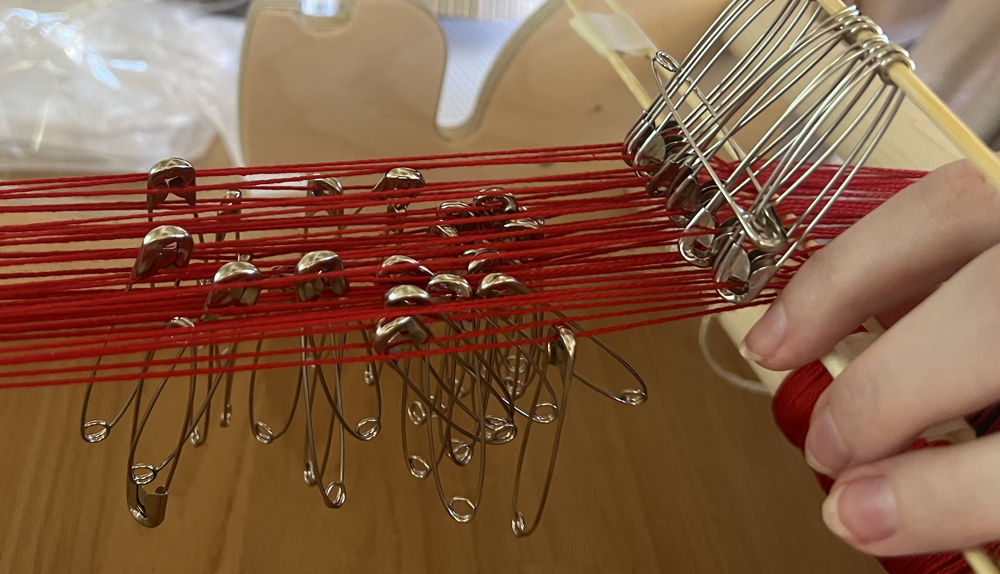
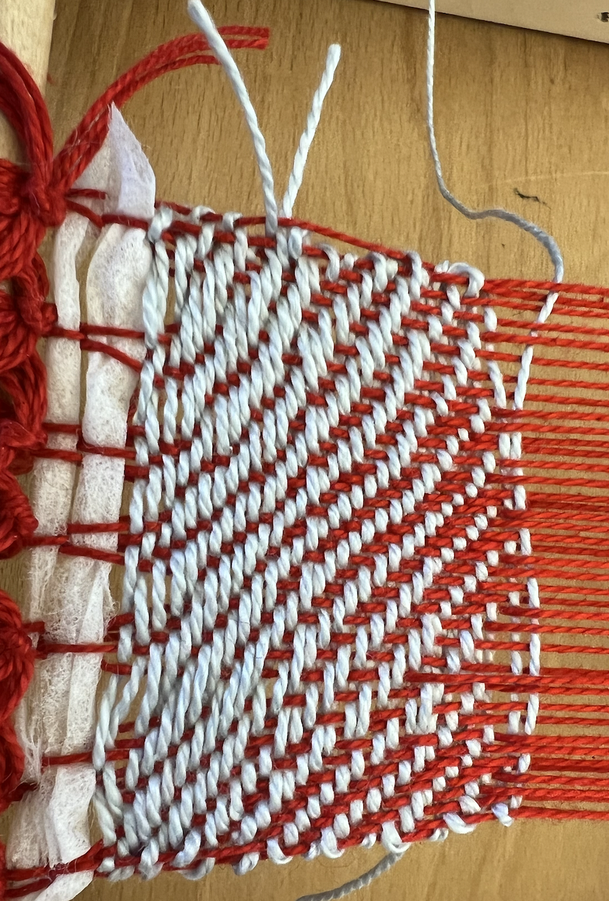
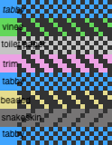
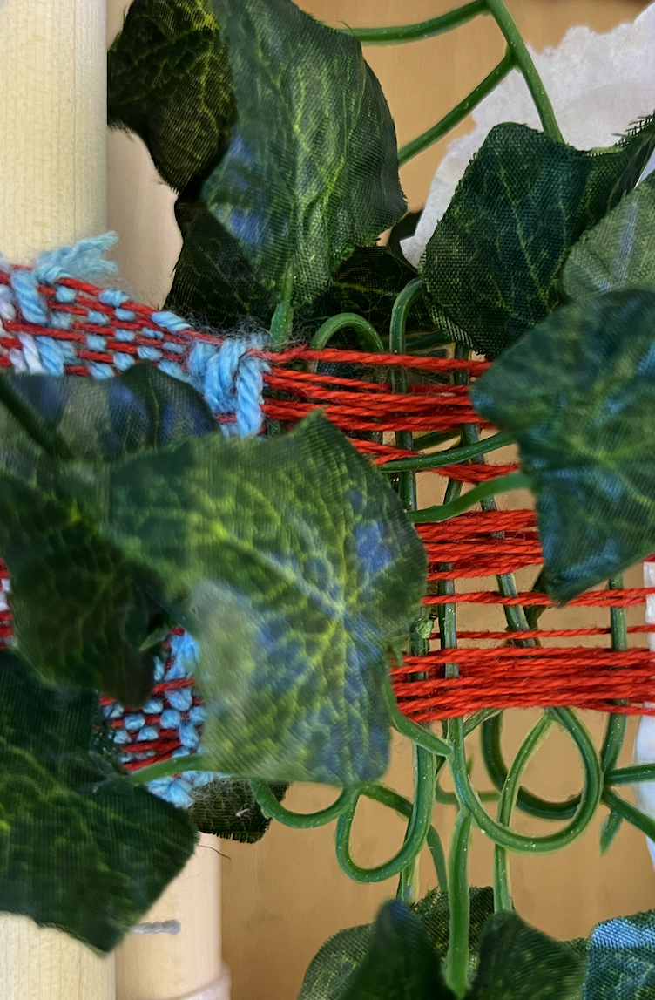
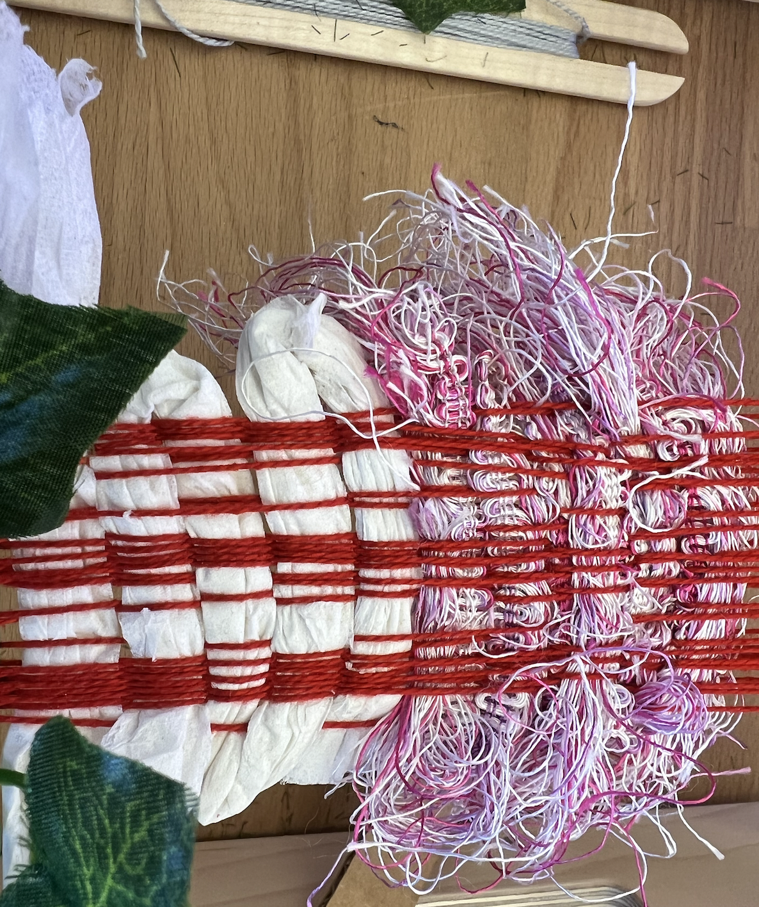
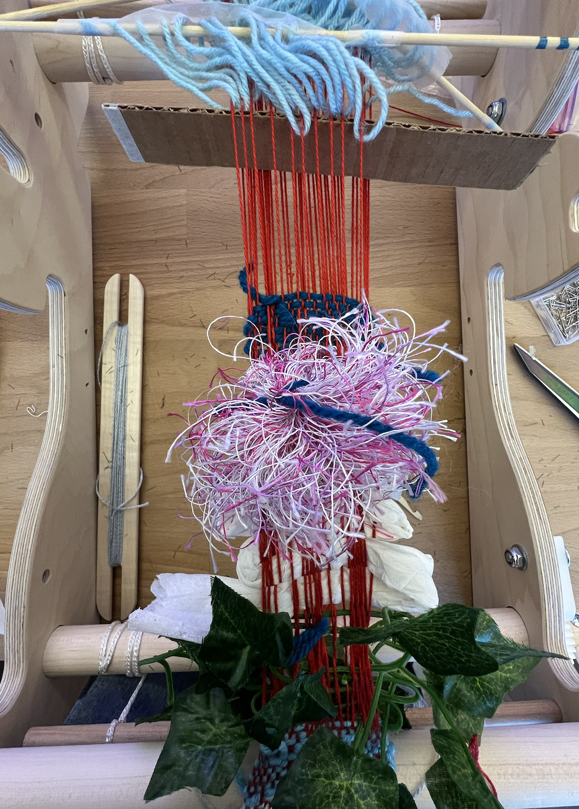
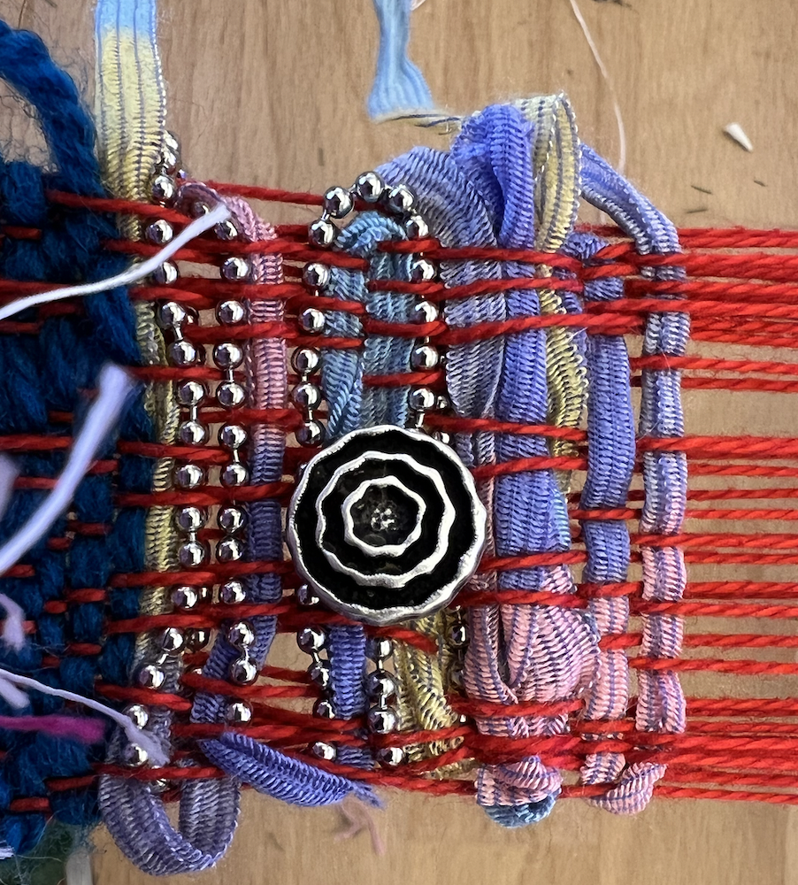
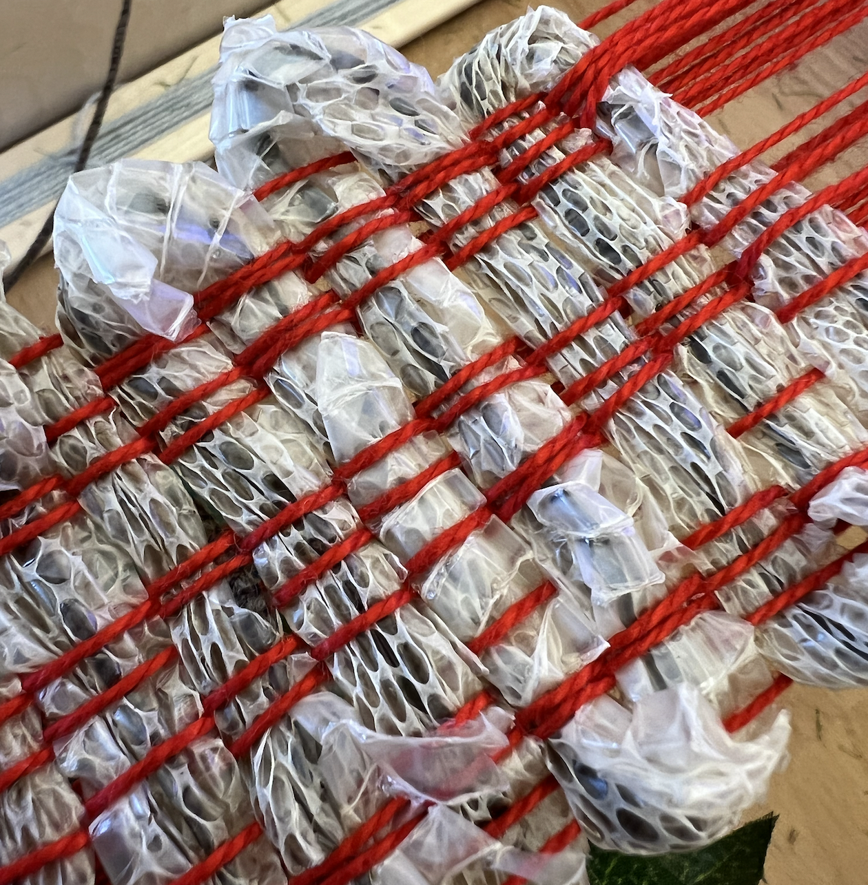

I have been thinking about weaving items other than yarn since one of the first days of class when someone mentioned potentially weaving with plants or even snakeskin! I actually have one snakeskin on hand; it's time to use it; the skin would yield some exciting results for flexibility and durability.
In class (9/14) on Wednesday, we learned about the weavers cross (warping in figure 8), and my partner and I began using four clamps to set up our warp. After about 20 strands, we inputted two chopstick-like figures to preserve the figure eight cross in the middle of our warp. Once we were finished weaving the warp around the clamps, we carried the warp over to our loom to connect them. After the warp was secured on the loom, we cut the end of the warp off and used a surgeon's knot to tighten the tension in the warp. On 9/19, we began by re-tensioning our warp and began to make hanging frames using large safety pins and chop-stick-like skewers. After the safety pins had been securely attached to each warp, we set up each frame by inputting the skewer into the safety pins. On Wednesday(9/21), we decided to scrap the safety-pin frames entirely and instead try string heddles as we did on the Book Loom. My partner and I worked together to thread the string through each warp on our loom. This technique was easier, faster, and more effective than the safety-pin method.
Draft creation and understanding have always confused me, so I pushed myself to learn more about how to read and write drafts correctly. Another struggle was using the large safety pins to create a frame that moved the warp. The warp strands were a bit too small to stick in the eyelet, so we struggled to be able to push the frame up and down. Our warp still had some tension issues at this point, which made starting a weft more challenging. I enjoyed working with the different materials; however, the vines were practically impossible to work with because of their inability to bend easily and the plastic type of material holding them together. My favorite part of the weave was using the snake shed, it was incredibly fragile, so I decided to thread a piece of string through it in case it degrades over time or becomes frail due to the tension. It was so beautiful and fun to work with! I needed help using all the frames effectively, especially with large pieces of material. A stronger shed stick would help that, as well as finding the right length and tension for the string frames.